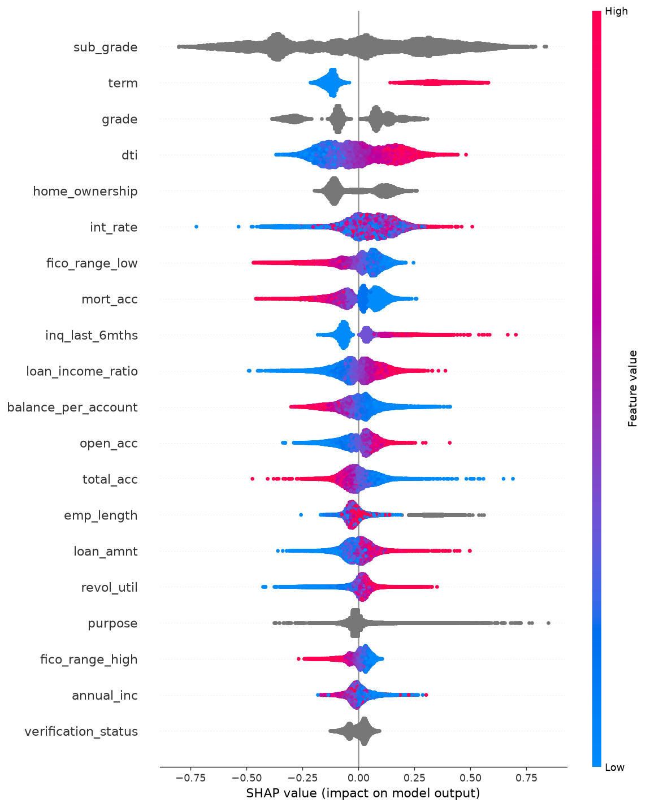

An end-to-end ML pipeline for credit default prediction. Trained on 1.3M real loans, evaluated with rigorous cross-validation, and deployed to run in your browser — no server required.
This project wasn't just about building a model — it was about auditing every decision along the way.
SHAP analysis revealed that issue_year
and addr_state were causing temporal leakage.
Removing them cost 1% AUC but made the model production-ready.
When the model hit a ceiling, we ran controlled experiments
(v4 → v5 → v6) to isolate whether max_rounds
or learning_rate was the bottleneck.
Beyond AUC, we compute Expected Loss
(PD × LGD × EAD) and derive
risk-based interest rates — the language banks actually speak.
The trained LightGBM model was converted to ONNX and runs entirely client-side. No server, no API calls, no data leaves your device.
Every prediction comes with a SHAP explanation showing exactly which features pushed the decision up or down.

Try the interactive demo, or dig into the methodology, data pipeline, and modeling decisions.